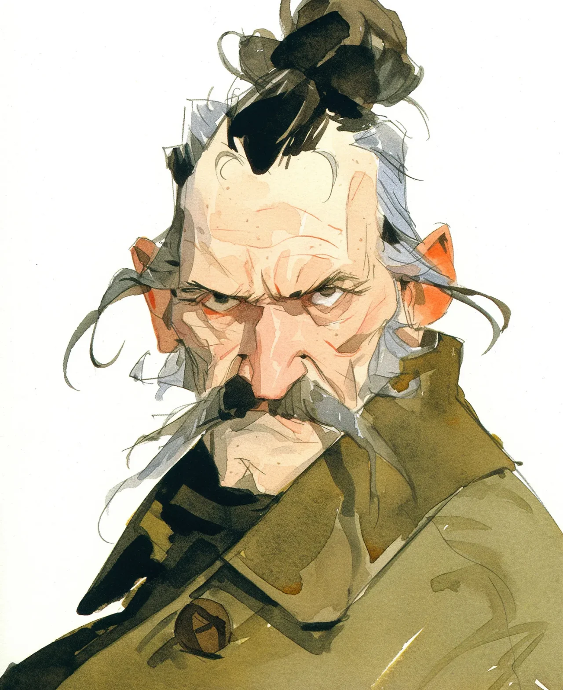

“내 손녀가 ‘시대에 맞춰가야 한다'고 했어. 3주가 지난 지금, 200만 명의 십대들이 나를 '홀섬 킹'이라고 부르는데, 둘 중 뭐가 더 모욕적인지 모르겠다.”
[My granddaughter said I needed to 'get with the times.’ Three weeks later, I’m being called a 'wholesome king’ by two million teenagers, and I don’t know which part insults me more.]
이 모든 난리는 에밀리가 내 폰에 그 빌어먹을 틱톡이란 걸 깔면서 시작됐다. 그게 “정신을 활발하게 해줄 거"라고 했다. 마치 40년 동안 폭탄 해체하는 일이 내 정신을 충분히 날카롭게 만들어주지 않은 것처럼 말이다. 하지만 그 애가 그런 표정을 지었다 - 할머니가 예전에 짓곤 했던 그 표정 - 그래서 난 고개를 끄덕이고 관심 있는 척했다.
[The whole mess started when Emily installed that damn TikTok thing on my phone. Said it would "keep my mind active.” As if forty years of defusing bombs hadn’t kept my mind sharp enough. But she had that look—the same one her grandmother used to give me—so I nodded and pretended to care.]
내가 올린 첫 영상은 열리지 않는 피클 병에 욕을 하는 거였다. 녹화되고 있다는 것도 몰랐다. 에밀리가 내가 그 병과 씨름하는 동안 폰을 세워뒀는데, 내 헝클어진 회색 머리는 여느 때처럼 아인슈타인처럼 보였다. “군대에서 30년을 있었는데,” 난 그 병을 향해 으르렁거렸다. “네가 날 이길 수 있을 거라 생각해? 난 음식물 분쇄기도 겁먹을 만한 걸 먹어봤다고.”
[First video I posted was me cursing at a jar of pickles that wouldn’t open. Didn’t even know I was being recorded. Emily had propped up my phone while I wrestled with the thing, my wild gray hair doing its usual Einstein impression. “Thirty years in the military,” I growled at the jar, “and you think you can outlast me? I’ve eaten things that would make a garbage disposal nervous.”]
결국 그 병이 이겼다. 고무 그립을 써야 했다.
[The jar won. I had to use the rubber grip thing.]
24시간이 지나고 에밀리가 전화해서 내가 바이럴이 됐다고 소리를 질렀다. 난 내가 코로나에 걸린 줄 알았다.
[Twenty-four hours later, Emily called, screaming something about me going viral. I thought I’d caught COVID.]
“아니야, 할아버지! 트렌딩이에요! 조회수가 50만이나 돼요!”
[“No, Grandpa! You’re trending! Half a million views!”]
알고 보니 사람들은 이 늙은이가 절인 오이와 싸워서 지는 걸 완전 재밌어했다. 댓글엔 “이분 꼭 지켜드려야 해” 랑 “할아버지 에너지 뿜뿜” 같은 말들이 가득했다. 도대체 그게 무슨 뜻인지 알 수가 있나.
[Turns out, people found it hilarious—this angry old coot losing a battle with preserved cucumbers. The comments were full of things like “protect him at all costs” and “grandfather energy intensifies.” What in the sam hill does that even mean?]
정신을 차려보니 에밀리는 날 “리액션 비디오"라는 걸 찍게 만들었다. 내가 백플립하는 사람들을 보고 (멍청이들), 요즘 은어를 이해하려 하고 ("노캡"이 거짓말 안 한다는 뜻이라고? "솔직히"라고 하면 될 걸), 에너지 드링크를 리뷰하는 ("배터리를 설탕물에 녹인 맛이군”) 영상들이었다.
[Before I knew it, Emily had me doing what she called “reaction videos.” Me watching people doing backflips (idiots), trying to understand modern slang (“no cap” means they’re not lying? What happened to just saying “honestly”?), and reviewing energy drinks (“Tastes like someone melted a battery in sugar water”).]
내 가장 인기 있는 영상? 이 어린 녀석들한테 병원식 모서리로 침대를 제대로 정리하는 법을 가르쳐주는 거였다. “동전을 던졌을 때 튀어 오를 정도가 돼야 해. 그래도 아직 부족해!” 내가 카메라를 향해 고함을 쳤다. “그리고 네 목숨이 걸린 것처럼 그 모서리를 단단히 접어. 언젠가는 진짜 그럴 수도 있으니까!”
[My most popular video? Me teaching these young punks how to properly make a bed with hospital corners. “If you can bounce a quarter off it, it’s still not tight enough,” I barked at the camera. “And tuck in those corners like your life depends on it, because one day, it might!”]
댓글들이 미쳤다:
[The comments were wild:]
“화가 난 게 아니라 우리 침대 정리 실력이 실망스러우신 거야 😭”
[“He’s not mad, he’s just disappointed in our bed-making skills 😭”]
“2025년에 우리에게 필요했던 에너지다”
[“This is the energy we needed in 2025”]
“POV: 너의 할아버지가 몰래 주인공이었음”
[“POV: Your grandpa is secretly the main character”]
에밀리가 POV가 무슨 뜻인지 설명하려고 했는데, 난 내 뇌가 귀에서 새어나오기 전에 그만하라고 했다.
[Emily tried explaining what POV means, but I told her to stop before my brain started leaking out my ears.]
지난주엔 마트에서 어떤 애가 내 사인을 해달라고 했다. 난 그 애한테 침대를 제대로 정리하는 걸 보여주면 영수증에 사인해주겠다고 했다. 불쌍한 녀석, 마치 내가 다빈치 코드를 해독하라고 한 것처럼 보였다.
[Last week, some kid at the grocery store asked for my autograph. I told him I’d sign his receipt if he showed me he could make his bed properly. Poor kid looked like I’d asked him to decode the Da Vinci Code.]
이제 에밀리는 “수익 창출"이니 "브랜드 딜"이니 하는 얘기를 하고 있다. 어떤 매트리스 회사가 자기네 제품을 홍보해달라고 한다는군. 나한테 말이다! 평생 반은 돌덩이 위에서 자면서 그걸 호화로운 숙소라고 불렀던 바로 그 사람한테.
[Now Emily’s talking about "monetization” and “brand deals.” Apparently, some mattress company wants me to promote their products. Me! The same guy who spent half his career sleeping on rocks and calling it luxury accommodation.]
진짜 웃긴 건? 내 옛 부대에서 이 소식을 들었다는 거다. 존슨 상사한테 문자가 왔다: “상관님, 죄송하지만, 이제 틱톡 스타가 되셨다고요? 세상이 정말 미쳐가나 봅니다.”
[The real kicker? My old unit caught wind of it. Got a text from Johnson, my former sergeant major: “Sir, with all due respect, you’re a TikTok star now? The world really has gone to hell.”]
난 에밀리가 가르쳐준 그 바보같은 춤을 추는 영상을 보내줬다, 그저 그를 고통스럽게 하려고.
[I sent back a video of me doing that stupid dance Emily taught me, just to watch him suffer.]
아마도 이 “시대에 맞춰가는” 것도 그렇게 나쁘진 않은 것 같다. 하지만 누군가 날 한 번만 더 “베스티"라고 부르면, 인터넷을 통째로 지워버릴 거다. 젠장맞을 인터넷 전체를. 방법은 찾아내겠지.
[Maybe this "getting with the times” thing isn’t so bad after all. Though if one more person calls me “bestie,” I’m deleting the internet. The whole damn thing. I’m sure I can figure out how.]
적어도 그 피클 병은 이제 유명해졌다. 아직도 안 열린 채로 내 선반에 트로피처럼 놓여있다. 어떤 싸움은 품위 있게 지는 거고, 어떤 싸움은 콘텐츠로 만드는 거다. 에밀리 말로는 그렇다나. 난 그냥 복수라고 부르지만.
[At least the pickle jar is now famous. It sits on my shelf like a trophy, still unopened. Some battles you lose with dignity, and some you turn into content. That’s what Emily calls it anyway. I just call it revenge.]
요즘 애들이 뭔가를 알고 있는 것 같다, 비록 침대는 제대로 정리할 줄 모르지만. 하지만 에밀리한텐 내가 이런 말 했다고 하지 마라. 내 명성을 지켜야 하니까.
[The kids these days might be onto something, even if they can’t make their beds worth a damn. But don’t tell Emily I said that. I’ve got a reputation to maintain.]
이제 실례하지만, 난 “POV: 군대 할아버지가 너의 게이밍 셋업을 평가한다"라는 걸 찍어야 한다고 한다. 그게 뭔진 모르겠지만. 이 녀석들 케이블 정리가 제대로 안 돼있으면 혼쭐을 내줄 거다.
[Now, if you’ll excuse me, apparently I need to film something called a "POV: Military grandpa rates your gaming setup.” Whatever that means. These kids better have their cables properly managed, or they’re in for an earful.]